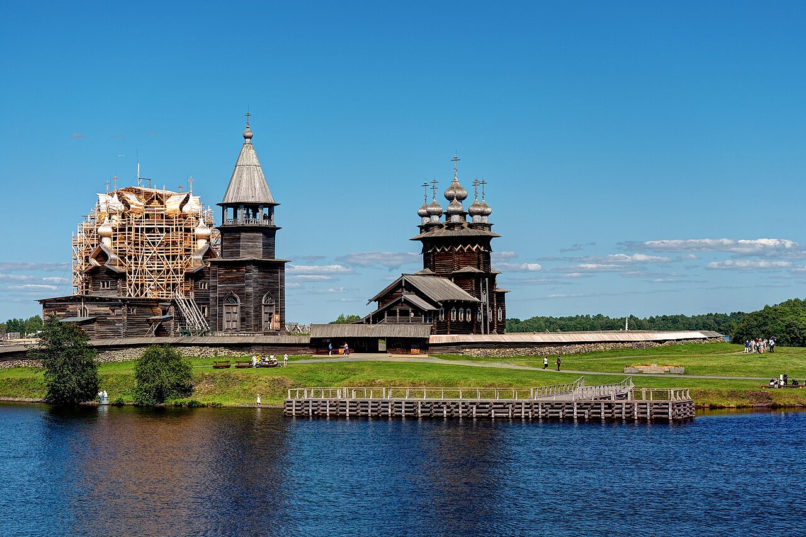
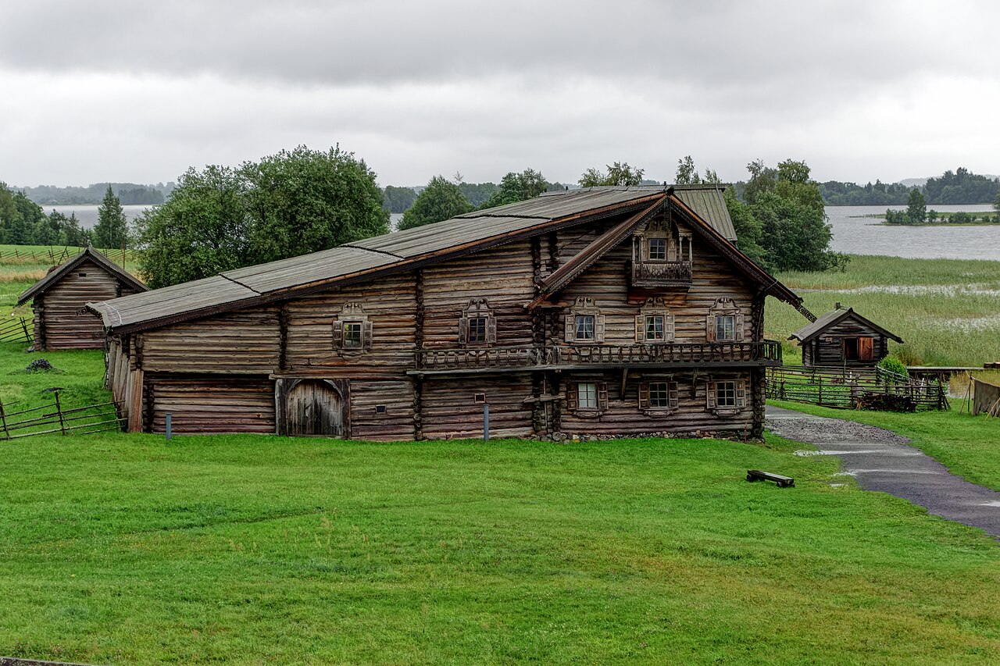
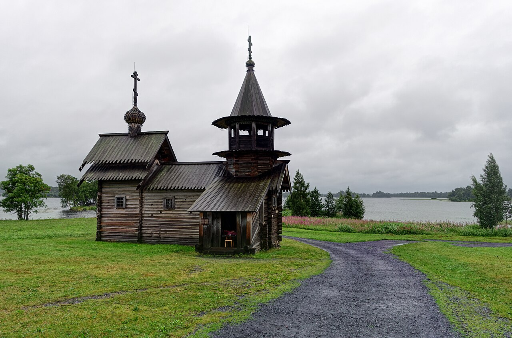

На месте. Две церкви и колокольня образуют исторический погост на узком мысу. Нынешние церкви построены в XVIII веке на месте сгоревших предшественниц; колокольня относится к XIX веку.

1 января · Карелия · архитектурное расследование
Как на одном острове собрали деревянную Россию?
Знаменитый погост стоял здесь веками. Дома, часовни и церкви вокруг него приезжали из исчезающих деревень. Сможешь отличить исторический ансамбль от собранного музея?
Увидеть главное за 3 минуты34 секунды фоторассказа → пять ставок → вывод
Исследовать самостоятельноАудиопрогулка, четыре масштаба, история и источники
Карта самостоятельного маршрута
Короткий маршрут: 0 из 2 действий.
Шаг 1 · фоторассказ · 34 секунды
Остров или музейная коллекция?
Документальный фоторассказ ставит вопрос; факты и происхождение построек ты проверишь сам в следующем блоке.




MYSTERY · с ИИ-озвучкой
Один остров. Но не все здания родились здесь.
Документальный фоторассказ собран из лицензированных фотографий; смысл продублирован видимыми титрами.
00:00 / 00:34
Аудиопрогулка · 2:12
Пройди от погоста к перевезённому дому
Синтезированный голос ведёт взгляд по четырём остановкам и не повторяет статью. Полная расшифровка доступна без звука.
Смотри сначала на расстояние между зданиями
Погост собирает три сооружения внутри ограды. Музейная экспозиция растягивается по острову и связывает памятники с ландшафтом.
Читать полную расшифровку
Остановка 1. Берег. Представь, что ты подходишь к острову с воды. Собери в одном взгляде озеро, низкий берег и силуэт погоста. Вода даёт расстояние, из которого три сооружения читаются как ансамбль.
Остановка 2. Ограда. Внутри неё стоят Преображенская и Покровская церкви и колокольня. Они образуют исторический приходской центр. Ограда показывает: Кижский погост — не весь музей под открытым небом.
Остановка 3. Дом Ошевнева. Это целый мир семьи и хозяйства под общей кровлей. Дом построили в другой деревне; в 1951 году его разобрали в Ошевневе, перевезли на Кижи и собрали заново.
Остановка 4. Расстояние. Промежутки между погостом, домом, часовней и маленькой церковью — не пустота и не улица одной деревни. Это маршрут между памятниками из разных поселений.
Вывод. Кижи — одновременно историческое место и созданная музеем коллекция. Понять остров — значит удержать оба слоя и не смешивать их происхождение.
Настоящий MP3, ИИ-голос Дмитрий. Длительность 2 минуты 12 секунд; браузерный синтез речи не используется.
Четыре расстояния
Один остров читается в четырёх масштабах
Ландшафт даёт место, ансамбль — связь зданий, отдельная постройка — функцию, деталь — руку плотника.
Шаг 2 · главный интерактив
Что стояло здесь — а что приехало?
Сделай ставку до ответа. Каждый выбор открывает происхождение постройки и меняет маршрут на схеме.
Пять построек — пять ставок
Открой карточку и реши: памятник стоит на историческом месте или был перевезён?
Перевезён из деревни Ошевнево в 1951 году. Это первый памятник будущей архитектурно-этнографической экспозиции.
Перевезена из Муромского монастыря. Музей показывает её отдельно от погоста, не выдавая за часть исторического ансамбля.
Перевезена из деревни Леликозеро. Её маршрут раскрывает, что музей собирал памятники из разных поселений Заонежья.
Перевезён из деревни Клещейла в 1966 году. Он стал основой карельского сектора экспозиции.
Раскрыто: 0 из 5. Правильных ставок: 0.
Учебная схема показывает происхождение, а не точные расстояния и границы. Текстовая альтернатива содержится в раскрытых карточках.
Документальная фотография показывает современный вид памятника, но не сообщает, где он был построен. Для происхождения нужен музейный паспорт.
Шаг 3 · вывод короткого маршрута
Кижский погост — исторический ансамбль на своём месте. Музей под открытым небом шире: он сохраняет перевезённые памятники и честно раскрывает их исходные места.
Что заметить глазами
Три признака, что перед тобой не одна деревня
Ограда погоста
Она собирает религиозный ансамбль. Всё, что находится за ней, не становится частью объекта UNESCO автоматически.
Паузы между постройками
Музей не имитирует тесную улицу одной деревни: разные сектора и маршруты сохраняют различие культурных контекстов.
Дом, часовня, церковь
Постройки отвечали разным ежедневным и праздничным действиям. Их собрали как систему жизни, а не как ряд красивых фасадов.
Вода и поля остаются экспонатом
Остров связывает памятники с северным способом расселения и маршрутом по озеру.
Трудно поверить
Музей начался до даты своего основания
Самостоятельный музей открыли 1 января 1966 года, но первый дом перевезли на остров ещё в 1951-м.
15лет между первым переносом и открытием музея
Сначала спасали здания — потом оформили учреждение
Архитектурный заповедник, реставрационные мастерские, первые перевозки и только затем самостоятельный музей: «день рождения» не равен началу всей работы.
История создания музея
Как остров стал убежищем для построек
Каждый этап менял не только коллекцию, но и способ думать о сохранении деревянной архитектуры.
Погост признан памятником
Исторический ансамбль получил официальный охранный статус.
Заповедник и реставрация
Создан архитектурный заповедник; местные плотники-реставраторы работали по проектам А. В. Ополовникова.
Первый перенос
Дом Ошевнева разобрали, перевезли на остров и восстановили.
Самостоятельный музей
Открыт Государственный историко-архитектурный музей «Кижи».
Перенос сохраняет материал и образ здания, но меняет его место. Хороший музей не скрывает эту цену спасения, а делает её частью рассказа.
Документальный голос
Кто собирал музей руками
Местные плотники стали реставраторами
Музей сообщает, что бригаду реставрационных мастерских комплектовали главным образом из жителей окрестных кижских деревень; бригадиром был М. К. Мышев. В 1949–1959 годах они реставрировали памятники погоста по проекту архитектора Александра Ополовникова.
Редакционное изложение официального материала музея «Формирование архитектурной экспозиции». Это не прямая цитата и не вымышленное интервью.Факт и интерпретация
Что сохраняет перенос — и что он меняет?
Проверенный факт
Дом Ошевнева, церковь Воскрешения Лазаря, часовня Архангела Михаила и дом Яковлева были перевезены на остров из других мест. Их происхождение зафиксировано в музейных материалах.
Музейное прочтение
Размещение памятников на острове помогает показать архитектуру в северном ландшафте. Но оно не превращает разные исходные деревни в одну историческую деревню Кижи.
Открыть источники, авторов фотографий и права
- 01Музей-заповедник «Кижи»: из истории создания музея — охрана погоста, 1951 год, 1 января 1966 года.
- 02Формирование архитектурной экспозиции — реставрационные мастерские, перевозки, секторы музея и роль местных плотников.
- 03Создание архитектурно-этнографической экспозиции — история перевозки дома Ошевнева и музейный принцип сохранения.
- 04Дом Ошевнева, церковь Воскрешения Лазаря, часовня Архангела Михаила, дом Яковлева — официальные паспорта памятников.
- 05UNESCO: Kizhi Pogost — состав, границы, подлинность и мировой статус исторического погоста.
- 06Все пять веб-фотографий: Alexxx1979, CC BY-SA 4.0, Wikimedia Commons. Файлы уменьшены до 1280 px без дорисовки: погост, остров, дом Ошевнева, церковь Лазаря, часовня.
- 07Новгородский музей-заповедник: 60 лет Витославлицам — основание музея в 1964 году и формирование коллекции.
- 08Skansen: Our history — основание музея Артуром Хазелиусом в 1891 году и принцип собранного музея под открытым небом.
{kind=link}
{kind=link}
{kind=link}
{kind=link}
{kind=link}
Россия и мир
Три музея под открытым небом — три разных основания
Сходство формата не означает одинаковую историю места.
Музей вокруг подлинного погоста
Исторический ансамбль остаётся центром; перевезённые памятники входят в экспозиционные секторы острова.
Коллекция в историческом ландшафте
Музей основан в 1964 году у Юрьева монастыря и собрал памятники деревянного зодчества Новгородской земли.
Собранный музей как замысел
С 1891 года здания и живые практики из разных регионов Швеции собирались ради показа страны в миниатюре.
У Кижей два центра подлинности
Подлинно и историческое место погоста, и материал перевезённых зданий — но их исходные места различны.
Маршрут по острову
Четыре остановки, чтобы увидеть два слоя
Погост
Сначала очерти глазами ограду и назови три главных сооружения.
Дом Ошевнева
Найди масштаб хозяйства под одной крышей и вспомни исходную деревню.
Церковь Лазаря
Сравни камерный сруб с многоглавым силуэтом погоста.
Часовня Архангела Михаила
Посмотри, как небольшая постройка собирает молитвенное помещение и колокольню.
Интерактивная миссия · 4 решения
Спаси дом Ошевнева
Не расставляй готовые пункты по порядку — принимай решение на каждом этапе и наблюдай, что происходит с домом.
Ошевнево
остров Кижи
0 / 4дом ещё в исходной деревне
Твоё решение меняет сцену слева
Шаг 1 из 4 · до разборки
Что нужно сделать прежде всего?
Проверка открытия
Теперь ты различаешь место и коллекцию?
Что входит в исторический Кижский погост?
Какой памятник первым перевезли для будущей экспозиции?
Что перенос меняет неизбежно?
Ответь на три вопроса. Итог появится здесь.
Календарь музея
Январь: архитектура меняет взгляд
Нажми 1 января: карточка раскрывает и название, и хук выпуска. Остальные страницы появятся только после отдельной приёмки.
Куда дальше
Продолжи расследование
Один путь — к следующему архитектурному парадоксу, два — к первичным источникам и реальному месту.